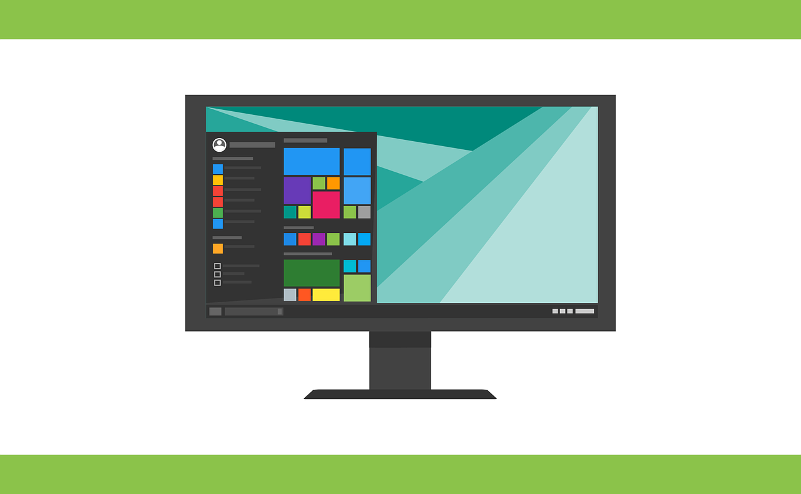
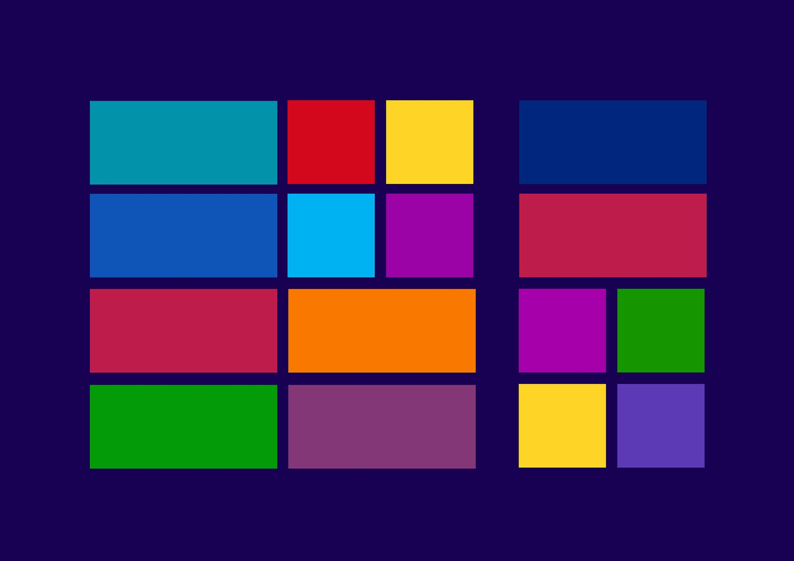
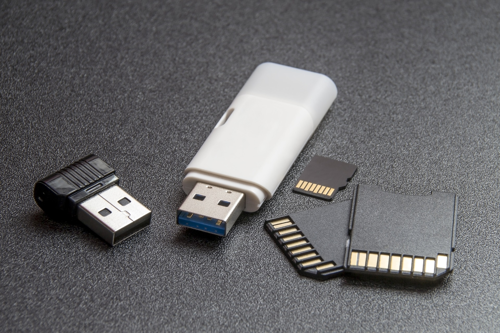
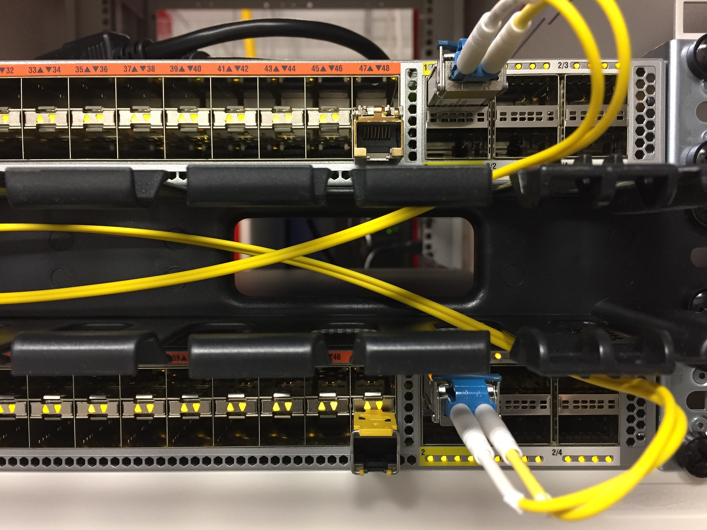

Tree Computers
Servicios a ofrecer

Hardware
Mantenimiento preventivo de equipo de computo (Limpieza interna y externa)
Asesoria para el sistema de computo (reacomodo de cables, conexion internamente etc.)

Software
Instalacion de sistemas operativos (windows Xp, 7, 8, 8.1 y 10) con su respectiva activacion

instalacion de software y activacion de acuerdo a la peticion del usuario

Desfragmentacion de disco duro (solo HDD)

Configuracion de windows a peticion del usuario

Instalacion de drivers

Soporte tecnico a distancia

Instalacion de S.O. Ubuntu
Ceacion de particiones de disco duro